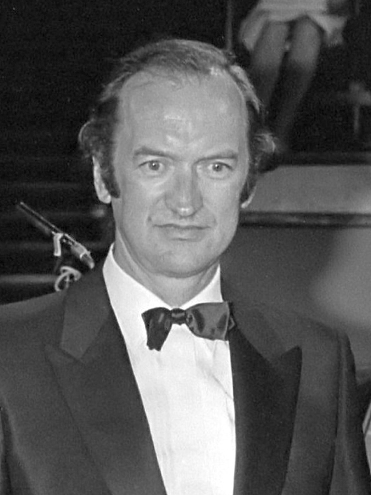

The HIP revolution: Harnoncourt, Leonhardt, and the complete cantatas

Historically informed performance — HIP, as the trade came to call it — begins from a question so simple it took two centuries to ask seriously: what did this music sound like in its own rooms? Not in the concert halls, on the instruments, at the scale that later eras found congenial, but with its own instruments, pitches, tempos, forces, and bows — the physical conditions under which every note was conceived. The question sounds antiquarian; its consequences were revolutionary, because the honest answers contradicted almost everything the performing tradition took for granted.
The movement's founding monument is the project that Nikolaus Harnoncourt in Vienna and Gustav Leonhardt in Amsterdam began in 1971: recording every sacred cantata — an undertaking that consumed eighteen years and forty-five volumes — on period instruments, with boys' choirs and boy trebles where Bach's own forces would have had them. The early volumes sound effortful even now: valveless horns cracking on their high notes, boy trebles straining at lines written to strain them. It would misread the whole enterprise to hear that as failure, because the effort was the point. Two centuries of upholstery — professional adult choirs, modern instruments engineered for security — had made Bach sound easy, and Bach is not easy; he wrote at the edge of what his forces could do, and the memo of 1730 itemizes exactly how far short those forces fell. The Harnoncourt–Leonhardt volumes made the cantata machine's weekly labor audible again: music being difficult, weekly, in real rooms, by real and imperfect forces. It was the sound of the historical truth, including the parts of the truth that do not flatter.
What happened next is the strangest kind of victory: one so complete that it became invisible. Dance tempos, transparent textures, singing bows — the step-feel that this timeline's craft essays simply assume — are no longer a movement's platform; they are how Bach is played now, by everyone, on modern instruments or old ones. A listener born after 1980 has likely never heard the upholstered Bach except as a curiosity, and so cannot hear how radical the plain one once was.
And the movement, honorably, kept radicalizing itself rather than settling into a new orthodoxy. In 1981 the American scholar Joshua Rifkin argued, from the evidence of the surviving performing parts, that Bach's normal "choir" was one singer per part — that the great choruses are, in effect, vocal chamber music, and the massed choir a later invention top to bottom. The claim ignited the era's best scholarly brawl. Parrott's The Essential Bach Choir makes the case at length; the counter-case holds the podium in plenty of places; recordings now exist both ways, and the debate is genuinely unresolved — which is why this timeline flags it disputed rather than pretending a verdict, and recommends the practical experiment over the pamphlets: hear a one-per-part motet before taking sides. The dispute is HIP's own founding question turned on itself, which is exactly what a healthy method does.
The reach of this event is easy to state: every recording this timeline recommends — Gardiner, Suzuki, Herreweghe, Koopman — is its direct descendant. In the arc's architecture, HIP is the twentieth century's Gesellschaft: where the nineteenth century restored the texts, note by recovered note, the twentieth restored the sound. But the parallel carries the arc's standing caution too. A restoration is still an interpretation wearing the authority of the past; "what it sounded like in its own rooms" is a reconstruction built from parts lists and treatises and inference, argued into being by living musicians with tastes of their own. The movement's claim to be a window rather than a portrait is the most persuasive claim in the whole gallery — and it hangs in the gallery all the same, flagged lovingly, one more true and incomplete Bach among the others.
Continue with the era essay: The Living Bach: 1850–present, or watch the movement live a year inside the machine: the Bach Cantata Pilgrimage.
Das Kantatenwerk (Telefunken/Teldec, 1971–89) documentation
Rifkin (1981) and Parrott, The Essential Bach Choir
→ full bibliography & links